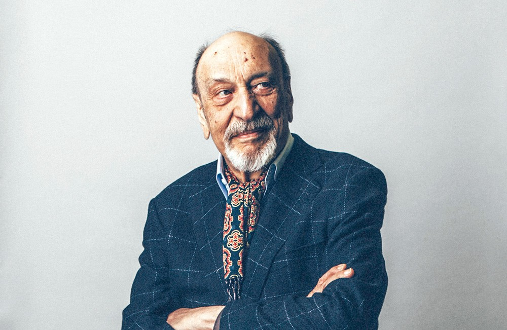
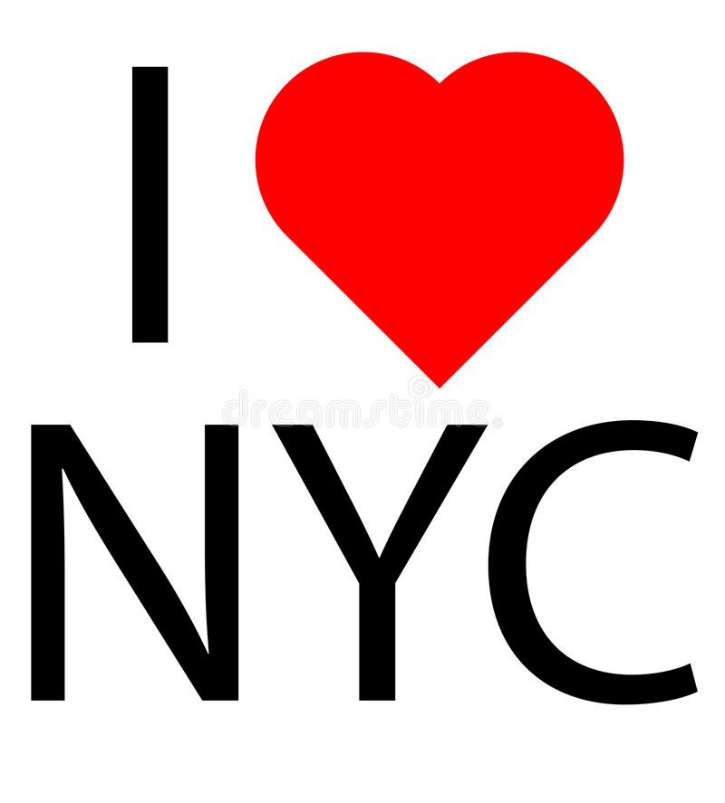
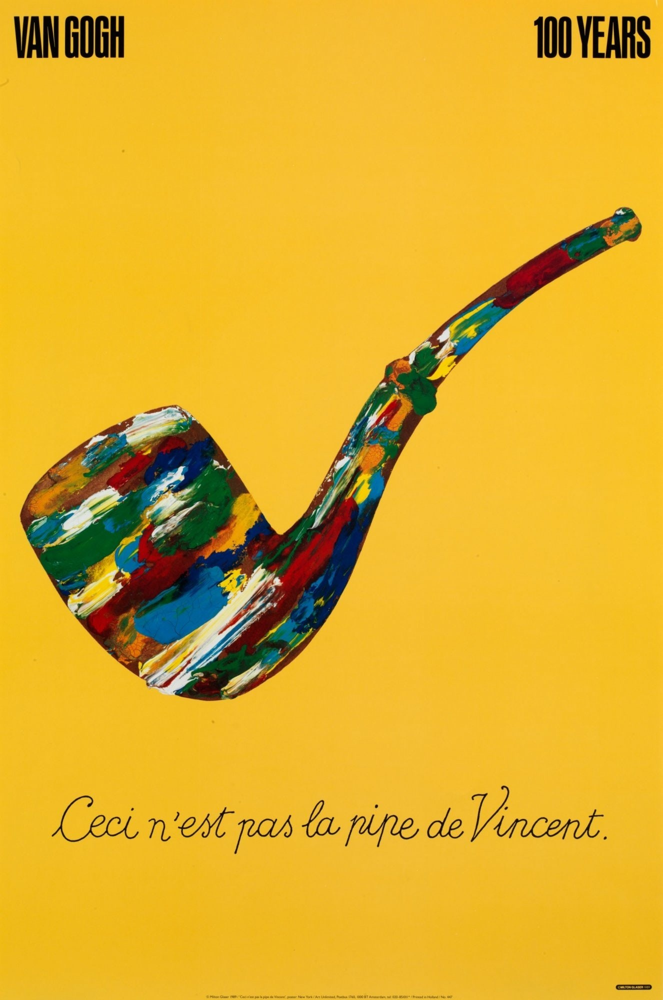
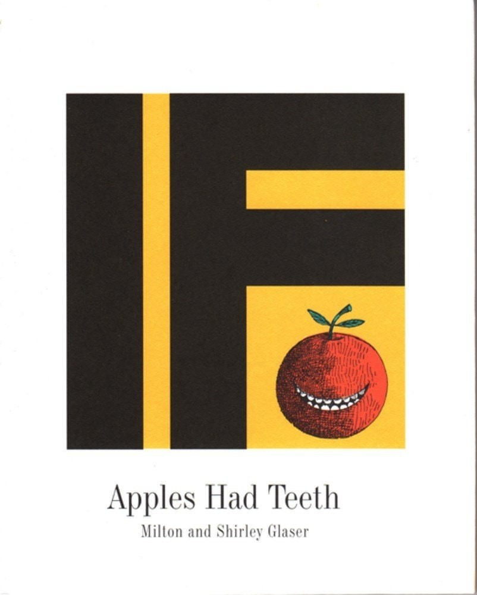

Glaser estudió en la conocida Cooper Union entre 1948 y 1951 Y a través de una beca Fulbright, también estudió en la Academia de Bellas Artes de Bolonia, en Italia, donde estuvo con el pintor Giorgio Morandi. Fundó con Seymour Chwast el Push Pin Studio para, en 1974, crear su propia compañía. Creó más de 300 carteles entre los que se cuenta el famoso de Bob Dylan, un símbolo de los años sesenta. Glaser se dedicó al diseño editorial y a la identidad corporativa. En el primer campo trabajó para publicaciones como Paris Macht, L´Express, Esquire o Village Voice y La Vanguardia (1987-1989) para realizar un cambio en esta publicación coincidiendo con su paso al color.En identidad corporativa, desde finales de los setenta se encargó de un gran proyecto para la compañía Grand Union, una cadena de supermercados en los Estados Unidos. También creó el logo de DC Comics. En 1977 creó el conocido símbolo para la campaña I Love New York. El estilo de Glaser se caracterizó por el eclecticismo y estuvo influido por numerosas fuentes si bien siempre dio a la ilustración una importancia grande. Diseñó algunos tipos de letra, la mayoría de carácter decorativo y escasamente legibles, como reflejo de esta orientación suya muy alejada de la ortodoxia metodológica. Su concepción creativa se acercó más a la de un artista tradicional que expresa en su obra una particular visión del mundo. En 1973 se publicó Milton Glaser: Graphic Design, una obra recopilatoria de su trabajo que ha tenido numerosas ediciones. Falleció el 26 de junio de 2020 a los noventa y un años debido a un derrame cerebral.
En 1954 fundó, junto a Seymour Chwast y Edward Sorel, entre otros, el Push Pin Studio. Su primer gran éxito, el que le dio a conocer como ilustrador internacionalmente, fue el dibujo de Bob Dylan con serpientes de colores en el pelo. Eran los años 60. "Las certezas cierran la mente. Para crear algo nuevo tienes que dudar".
Sucedió a finales de los 70 cuando la ciudad estaba atravesando por un mal momento: los atracos, la delincuencia y inseguridad eran la norma y Glaser dibujó un croquis de su I love New York en una servilleta mientras iba en taxi. No cobró nada por cederle la idea a la urbe, como un reclamo para recuperar el atractivo de la Gran Manzana. Mucho tiempo después, en 2001, tras los atentados que destruyeron las Torres Gemelas, lo reforzó: I love New York more than ever. Su simpicidad lo convirtió en el reclamo de merchandising más rentable de Estados Unidos. "Si lo tienes que explicar es que no funciona". 
En 1983, él y Walter Bernard crearon el estudio WBMG con sede en Nueva York y juntos le dieron la vuelta a la imagen de publicaciones tan importantes como el O Globo de Rio de Janeiro, La Vanguardia de Barcelona o el Washington Post en la capital de Estados Unidos. "Trabaja solo para gente que te guste (...). Descubrí con los años que todos los diseños significativos que he hecho nacen de una relación de afecto con el cliente, de gente con la que tengo cosas en común". 
En 1983, él y Walter Bernard crearon el estudio WBMG con sede en Nueva York y juntos le dieron la vuelta a la imagen de publicaciones tan importantes como el O Globo de Rio de Janeiro, La Vanguardia de Barcelona o el Washington Post en la capital de Estados Unidos. "Trabaja solo para gente que te guste (...). Descubrí con los años que todos los diseños significativos que he hecho nacen de una relación de afecto con el cliente, de gente con la que tengo cosas en común" 